Research
Autonomous Coverage Path Planning
Developed CPP algorithms with computer vision localization (ArUco) and polygonal decomposition for unknown environments.

I’m an Industrial Electronics Engineering student at UPC with hands‑on experience in hardware R&D and autonomous robotics. I believe in clean design, robust code, and solutions that endure.
Learn more about my journey →Development of trajectory planning algorithms (CPP), exploration in unknown environments, and localization using computer vision (ArUco, ROS2).
Microcontroller programming (STM32), hardware-software integration, MODBUS/LTE communication, and remote connectivity.
Design of automated test architectures, industrial protocol integration, and environmental/calibration testing.
Experience in institutional representation and team coordination, facilitating communication between technical and administrative actors.
Developed CPP algorithms with computer vision localization (ArUco) and polygonal decomposition for unknown environments.
Automated calibration tests with MODBUS, Grafana dashboards, and LTE integration for solar monitoring.
Elected student representative managing budgets and bridging startups with university administration.
Custom mechanical minipad designed from scratch, featuring schematic capture, PCB layout, and embedded firmware programming.
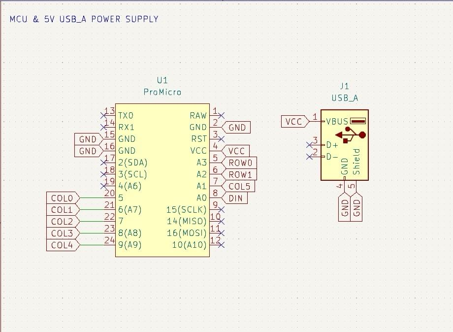
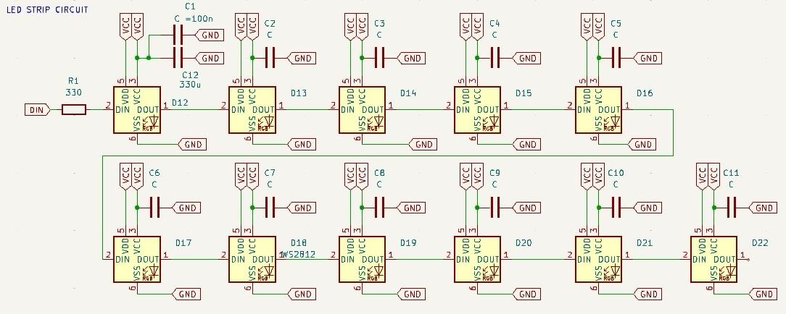
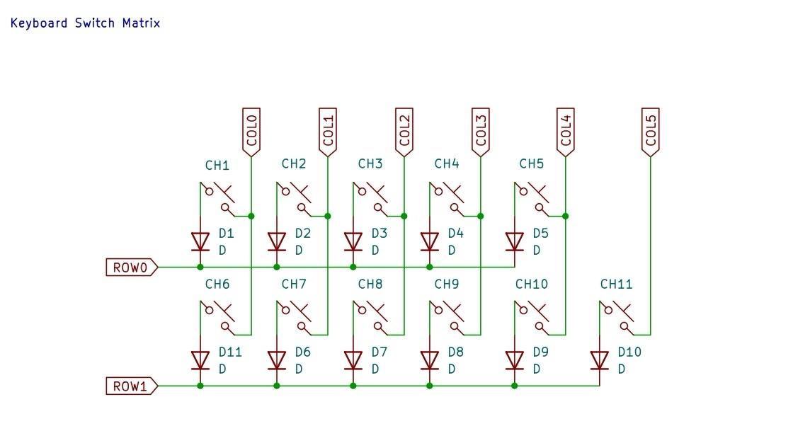
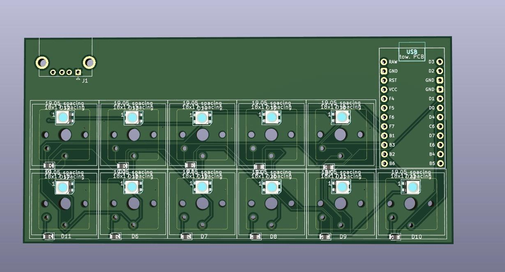
A modern, collaborative To-Do application built with Flutter and Firebase, featuring real-time syncing and dynamic task management.
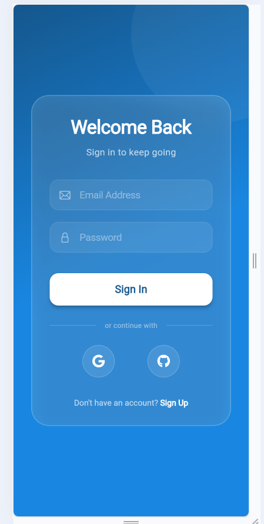
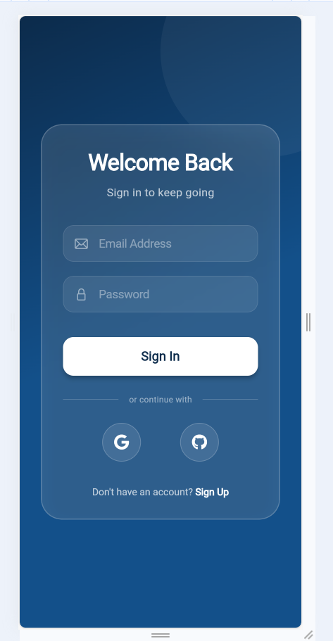
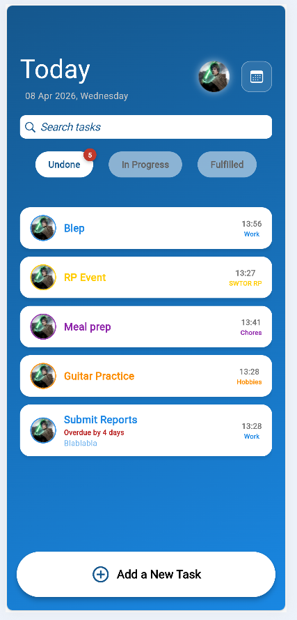
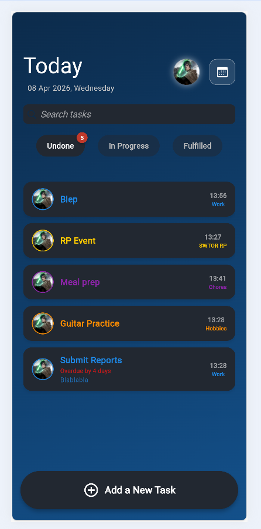
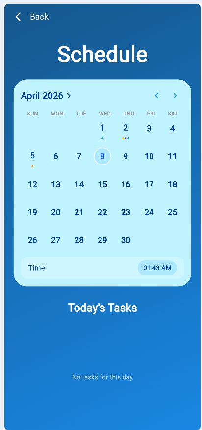
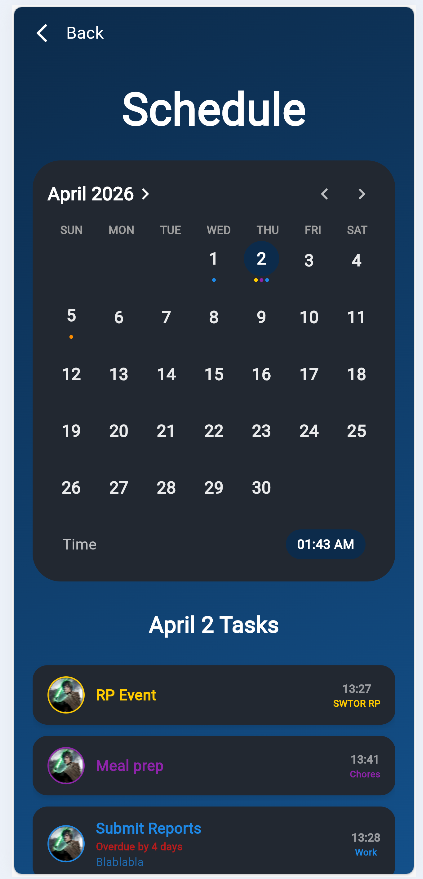
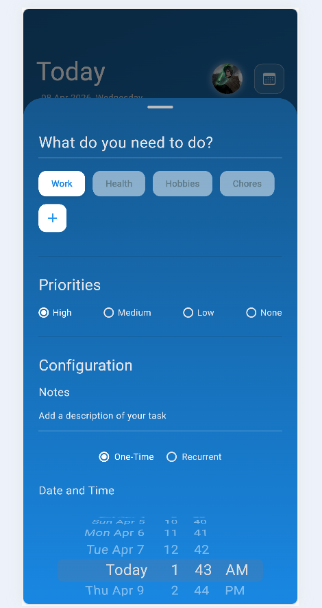
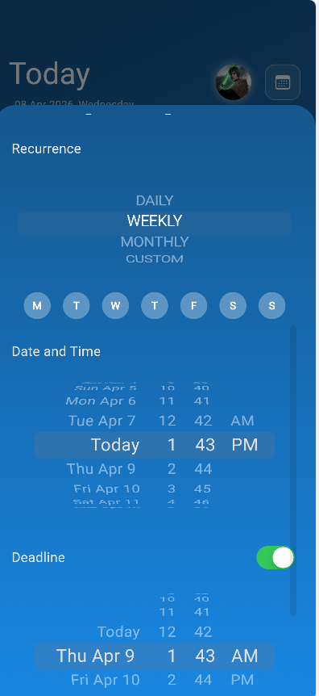
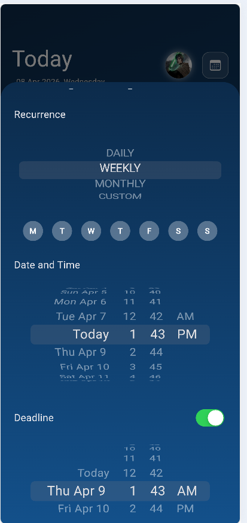
Analyzed battery discharge behavior using piecewise polynomial modeling to support precision firmware development.
I'm always open to discussing new projects, creative ideas or opportunities to be part of your visions.